论文：Structure-aware Visualization Retrieval
作者：Haotian Li, Yong Wang, Aoyu Wu, Huan Wei, Huamin Qu
发表：CHI 2022 (Honorable Mention)
现有可视化检索方法主要关注可视化的视觉外观，而忽略了基于 SVG 的可视化中固有的结构信息，其描述了视觉元素之间的空间和层次关系。本文提出了一种结构感知的可视化检索方法，通过综合考虑视觉和结构信息来提高检索的性能。定量比较、用户研究和案例研究证明了该方法的有效性。
Abstract
背景随着数据可视化的广泛使用，大量基于 Scalable Vector Graphic（SVG）的可视化被创建并在网上分享。
研究问题人们对从大型可视化语料库中检索出感知相似的可视化作品的探索兴趣越来越浓，因为它可以使各种下游应用（如可视化推荐）受益。
已有工作的不足现有的方法主要关注可视化的视觉外观，将其视为位图。然而忽略了基于 SVG 的可视化中固有的结构信息。这种结构信息可以勾勒出视觉元素之间的空间和层次关系，并从一个新的角度描述可视化的特征。
本文工作本文提出了一种结构感知的方法，通过综合考虑视觉和结构信息来提高可视化检索的性能。作者通过定量比较、用户研究和案例研究广泛地评估了提出的方法。结果证明该方法的有效性和它比现有方法的优势。
Introduction
背景
- 可视化很流行
- 原因：传递洞察，帮助决策
- 很多可视化基于 SVG
- 原因：支持交互和质量保持的放缩
- 结果：广泛用于存储和展示可视化
- 可视化检索在工业界和学术界广受关注
- 原因：支持很多下游任务，例如创建可视化集合以及可视化推荐
已有工作
- 可视化检索的核心问题是衡量可视化之间的相似性
- 数据相似性
- 概念：基于数据特征，例如数据分布
- 局限性：数据可获取性受限
- 感知相似性
- 概念：从可视化中计算特征向量，再衡量向量之间的距离
- 基于像素的方法：颜色分布直方图
- 深度学习的方法：基于位图自动提取特征
- 局限性：缺乏考虑 SVG 中的结构信息
- 概念：从可视化中计算特征向量，再衡量向量之间的距离
- 数据相似性
结构信息
- 概念：可视元素之间的空间和层级关系的描述
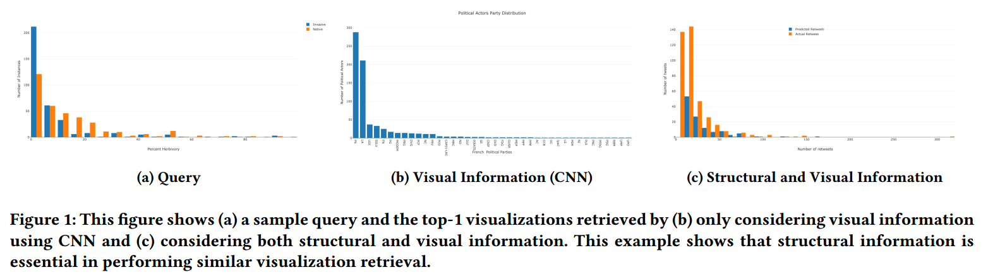
- 重要性：举例论证（Figure1），结构信息在刻画感知相似性中起着重要的作用
- 待解决的问题
- 可以提取什么样的基于结构的特征
- 如何利用这些基于结构的特征来促进相似可视化的检索
本文工作
- 一句话概括：利用结构和视觉信息来准确评估可视化之间的感知相似性
- 具体工作
- 预实验
- 理解人们评估可视化感知相似性的准则，并识别其中最重要的三条准则
- 可视化类型
- 可视元素数量
- 可视化数据的整体趋势
- 理解人们评估可视化感知相似性的准则，并识别其中最重要的三条准则
- 模型
- SVG 转化成 graph 和 bitmap image
- 利用对比表征学习(自监督)将可视化表示成嵌入向量(包含结构和视觉信息)
- 基于该向量进行相似可视化检索
- 评估
- 基于 VizML 数据集，通过众包用户实验进行评估
- 案例分析
- 定量比较
- 预实验
贡献
- 一种新颖的结构感知的相似可视化检索方法
- 通过嵌入向量来描述可视化之间的感知相似性。
- 广泛的评估，结果证明了方法的有效性
- 包括 50 名参与者的众包用户研究
- 多个案例研究
- 与现有可视化检索方法的定量比较
- 经验总结
Related Work
Visualization Retrieval
根据查询的类别，现有方法可以分为两类
- 基于定义的检索
- 通过编程语言或自然语言指定检索标准
- 基于样例的检索
- 使用现有的图表与草图进行搜索
与之前工作的联系
- 本文的方法属于基于样例的检索，但同时考虑了结构和视觉信息。
Visualization Similarity
计算可视化相似性可以支持很多下游任务（例如，探索式数据分析，可视化查询和可视化集合生成），现有工作可以分为两类
- 数据相似性
- 直接获取原始数据，通过数据分布或趋势来定义相似性
- 局限性：数据受限
- 从可视化中提取数据
- 局限性：现有方法性能不佳，容易对检索结果造成影响
- 直接获取原始数据，通过数据分布或趋势来定义相似性
- 感知相似性
- 定义：通过人工设计或学习出来的视觉特征来计算相似性。
与已有工作的联系
- 与数据方法相比，本文的方法不需要原始数据
- 与感知方法相比，本文不仅考虑了像素层面的视觉信息，还考虑了不同可视元素之间的关系(结构信息)，更符合从众包实验中发现的准则
Visualization Format
根据用途的不同，可视化可以被存储为多种形式（该分类来源于三作伍翱宇的 AI4VIS 的综述，Survey on Artificial Intelligence Approaches for Visualization Data）
- 图像
- 栅格图：难以编辑，丢失可视化特有的信息(图表类型和可视编码)
- 矢量图：可编辑，保留了部分可视化相关的信息，例如元素之间的关系
- 已有一些工作利用矢量图来实现可视化查询（可能是本文灵感来源）
- 基于 specification：Searching the Visual Style and Structure of D3 Visualizations
- 基于可视化类型：Beagle: Automated Extraction and Interpretation of Visualizations from the Web
- 已有一些工作利用矢量图来实现可视化查询（可能是本文灵感来源）
- 程序
- D3, Vega-Lite, Plotly
- 局限性：渲染需要额外的编译器
- 混合形式
- 将数据隐写至可视化，例如 Chartem, VisCode
与已有工作的联系考虑到 SVG 的普遍性，本文从 SVG 中提取了结构信息，从位图中提取了视觉信息，结合这两种信息有效刻画可视化相似性。
Background
Structural Information in SVGs
https://developer.mozilla.org/en-US/docs/Web/SVGScalable Vector Graphics (SVG) are an XML-based markup language for describing two-dimensional based vector graphics.
结构信息
- 元素之间的层次和空间关系
- 层次：继承，分组
- 视觉通道使用情况
- 原始数据的信息，例如数据项数目、属性数目
- 空间：元素的位置
- 反映元素的摆放情况和数据的大体趋势
- 层次：继承，分组
- 元素的属性
- 类型：\
- 样式：color, stroke
- 形状：”d” in \
- 类型：\
本文主要使用反映元素之间的层次和空间关系的结构信息，类型和样式等辅助信息也被用来区分不同的元素

Contrastive Learning
自监督表征学习广受关注
- 原因：高质量有标签的数据集获取困难
对比学习是一种代表性的自监督学习方法 （Self-supervised Learning: Generative or Contrastive）
- 目的：重构输入
- 场景：大量无标签数据
自监督学习可以进一步细分
- 生成式自监督学习：训练编码器将输入 x 编码成显式向量 z，解码器从 z 重建 x，最小化重建误差
- 对比式自监督学习（对比学习）：训练编码器将输入 x 编码成显式向量 z 以度量相似性（例如互信息最大化）
- 生成式对比自监督学习（对抗学习）：训练编码器生成假样本和鉴别器来区分它们与真实样本（例如 GAN）
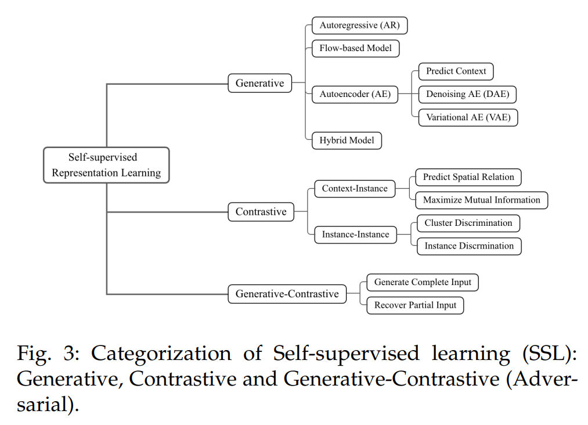
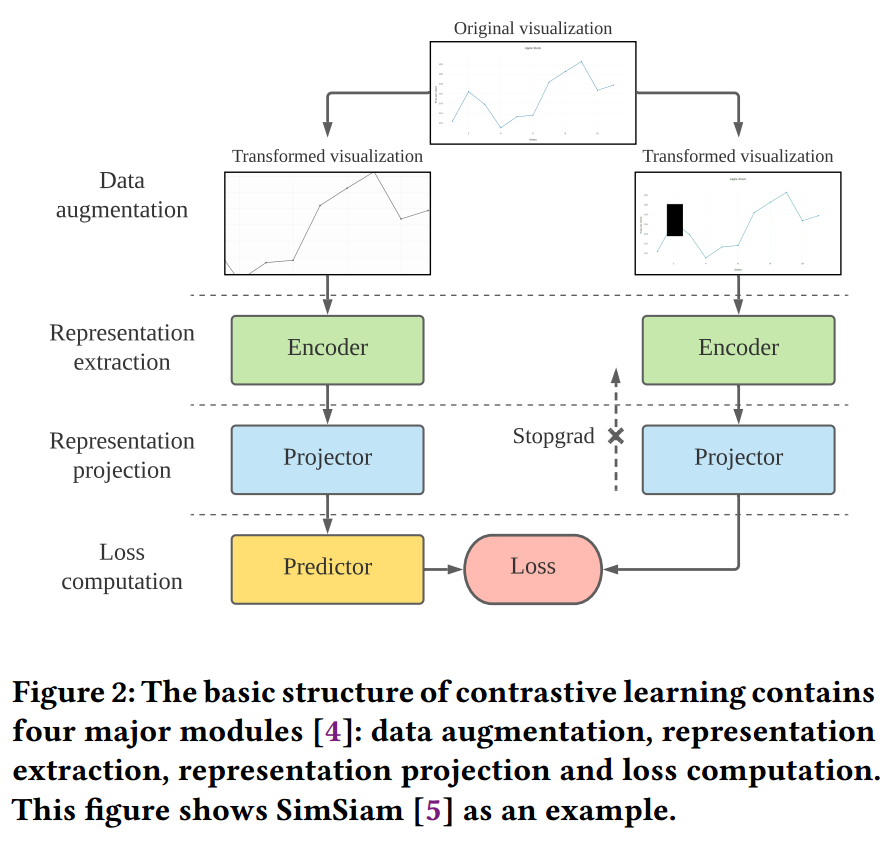
Graph Neural Networks
类似 CNN 中的卷积，GNN 包含 feature propagation 和 aggregationSVG 是树形结构（也可以看成图），所以可以使用 GNN 将结构信息表示成向量。GNN 主要应用于三类任务：
- node-level: 节点分类
- edge-level: 边预测
- graph-level: 图分类
- InfoGraph: Unsupervised and Semi-supervised Graph-Level Representation Learning via Mutual Information Maximization
Preliminary Study
做用户实验的网站：https://www.prolific.co/
- 展示 5 个查询的可视化，以及根据视觉信息检索出来的 top-5 的相似可视化
- 给每一个检索出来的可视化一个分数（1：最不相似；5：最相似）
- 写下打分的准则
- 两个作者对用户的回复打标，得到相似性准则
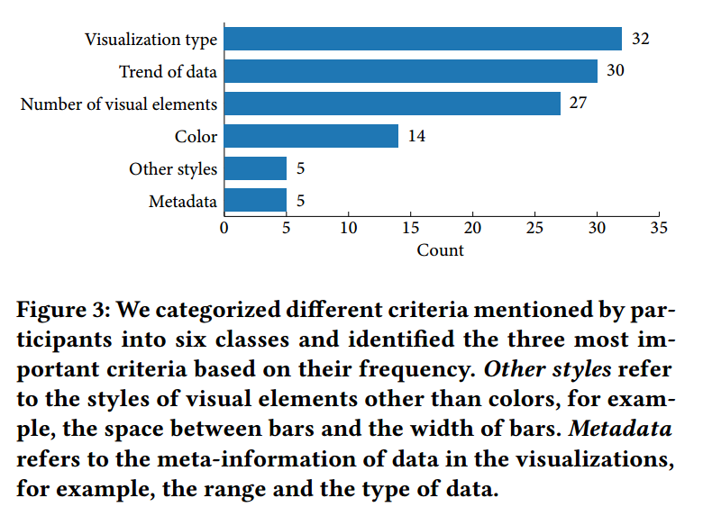与 An Automated Approach to Reasoning About Task-Oriented Insights in Responsive Visualization 工作中得出的结论一致
Method
what-why-how 的写作顺序
方法概览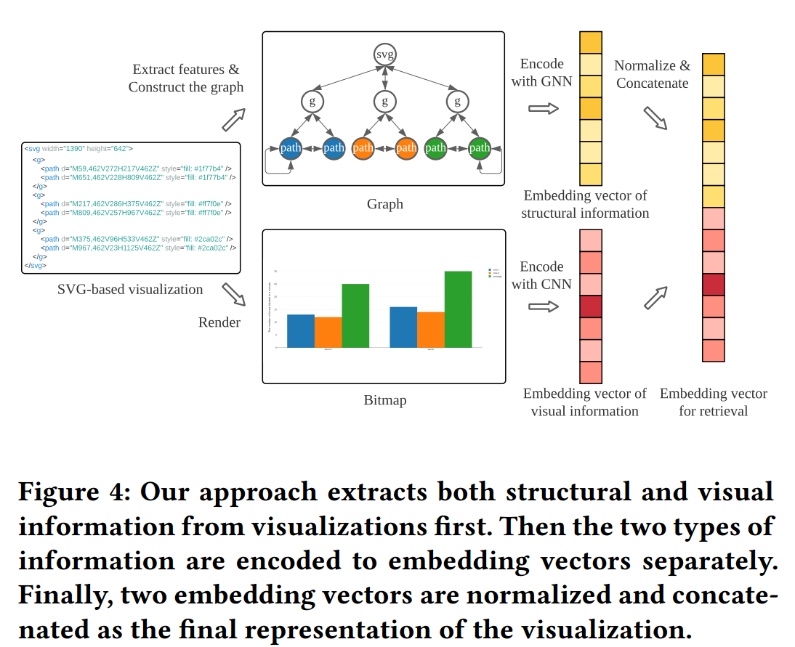之所以使用对比学习来训练 CNN 和 GNN 编码器，是因为其可以减少人标注数据的负担。接下来就分别介绍 GNN、CNN 和可视化检索
Representation Learning of Structural Information
Feature Extraction
type: one-hot encodingstyle: color, opacity, stroke(infrequent)shape:
- bar: area, center, height and width of its bounding box
- scatter: area, center, height and width of its bounding box
- line: the number of vertices in the line and the trend of the line(sample five points evenly)
- text: length
relationship between positions:
- 根据元素在横轴和纵轴的位置排序，位置之差作为一个特征
对于没有特征的元素，例如
Graph Construction
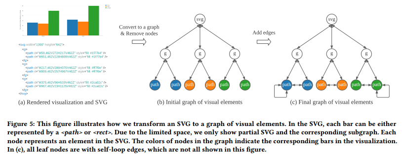
- 将 SVG 中的元素树转变成双向图
- 删除作为参考的元素（例如图例和网格线）
- 删除具有 0 个或 1 个孩子的
元素 - 增加自环和相邻元素的边来增广图（保证 feature propagation）
- 相邻的定义依据的是排序后的位置
使用 GNN 将结构信息表示成向量。
- 原理：最大化整个图的 embedding 与子结构的 embedding 之间的互信息
Representation Learning of Visual Information
受 ScatterNet 和 ChartNavigator 的启发。使用的模型是 SimSiam：孪生网络表征学习
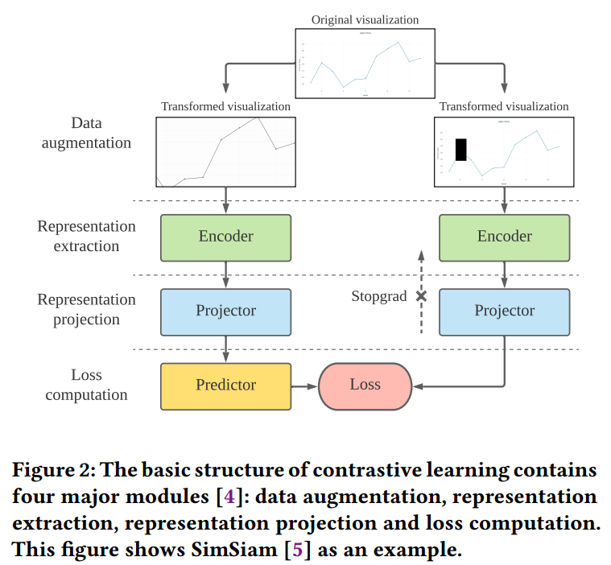
SimSiam 的输入要求是正方形，因此使用 0 填充，不适用 resize 的原因是其会改变数据的趋势。现有针对图像的数据增广方式有 cropping and resizing, cutting out, flipping, rotating, blurring, applying noise or filter and distorting the colors，但不是所有的都适用于可视化，例如翻转会导致数据趋势不一致。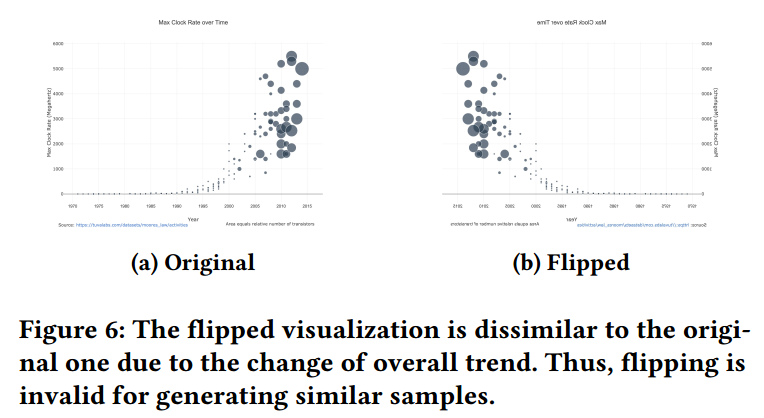
Visualization Retrieval
直接将结构和视觉 embedding 进行归一化(normalize)，并连接(concatenate)起来。使用 cosine 相似度来衡量可视化之间的距离。
Evaluation
总分结构，在开头给出概述
By using the large-scale SVG-bitmap visualization corpus (Section 6.1), we conducted extensive evaluations to assess our structureaware visualization retrieval approach including quantitative comparisons (Section 6.3), a user study (Section 6.4) and case studies (Section 6.5). We also introduce the model settings used in evaluations (Section 6.2). The results verify the effectiveness of our structure-aware visualization retrieval approach.
Corpus
在https://chart-studio.plotly.com/feed/中爬取对应的数据。收集了 51037 个 SVG-bitmap 可视化对类型包括：
- bar charts
- box plots
- histograms
- line charts
- scatter plots
由于 bar chart 和 histogram 仅仅区别于数据转换，所以作者将它们视作同一类。
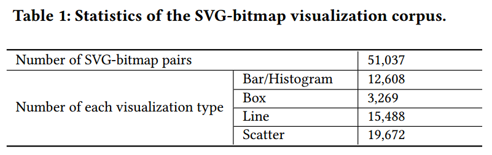遵循 Screen2Vec 的实践，从每类可视化中采样 90%作为训练集，剩下的作为测试集。
Model Settings
用四种方法进行比较
- Visual Information by Histogram of Oriented Gradients (HOG)
- Visual Information by CNN
- SimSiam with ResNet-50
- Structural Information by GNN
- InfoGraph with Graph Isomorphism Network
- Structural and Visual Information Fusion
- 本文的方法
得到 embedding 后，计算可视化之间的相似性分数。
Quantitative Evaluation
Metrics:由于可视化的类型不同，因此需要使用统一的指标根据预先实验，本文使用了两种简单的指标来衡量不同方法的性能
- visualization type consistency
- 计算在 top-k 查询中，检索到的可视化与原始可视化类型相同的数量
- 然后将这种可视化的数量除以 𝑘，得到每个查询可视化的类型一致率(Type-Consistent Rate, TCR)。
- 计算测试集中所有可视化的类型一致率的平均值和标准差，表示为 TCR_ave 和 TCR_std
- difference of the numbers of visible visual elements
- why：SVG 结构图中叶子节点是 visible visual elements，非叶节点主要用来编组或包含其他元素，并不直接可见，因此并不能被 V-CNN 和 V-HOG 直接观测到。为了使比较公平，所以只使用可见元素。
- 跟 TCR 类似，也计算平均值 DVE_ave 和方差 DVE_std.
TCR_std，DVE_ave 和 DVE_std 越小越好：算法表现稳定、误差越小 TCR_ave 越大越好：检索出更多相同类型的可视化
结果：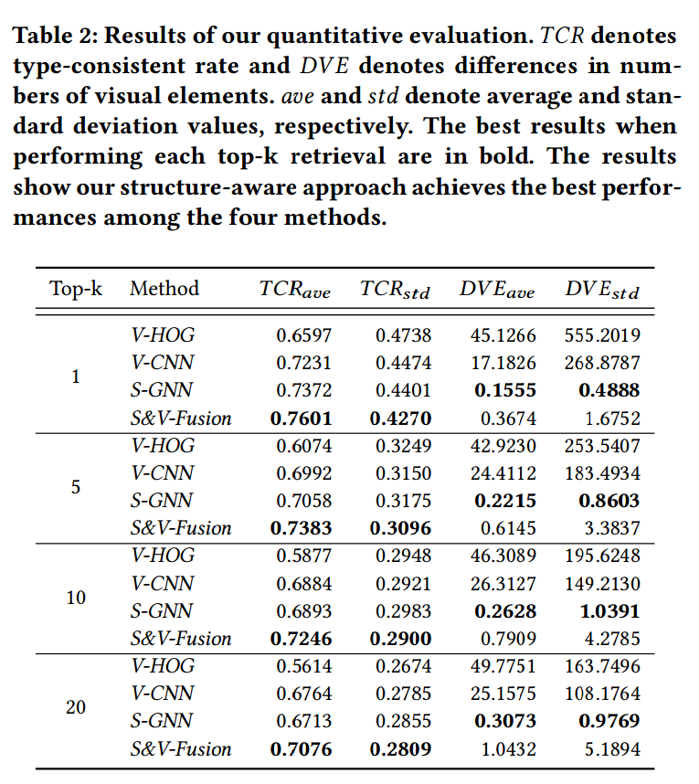DVE_ave 的结果与 Evaluating ‘Graphical Perception’ with CNNs 相吻合(align)，显示了结构信息的重要性
图 7 展示了 TCR_ave 的混淆矩阵.、
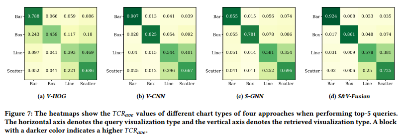尽管 CNN 和 GNN 在 TCR_ave 整体上表现一致，但在不同可视化类型上表现存在差异。文中还解释了原因。同时也说明了同时考虑结构信息和视觉信息有助于改进可视化检索性能。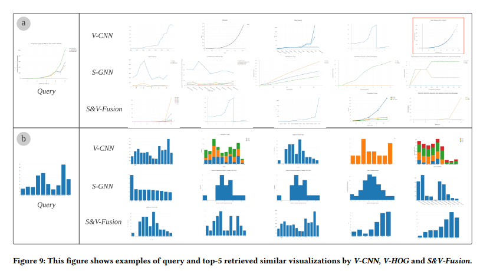
User Study
从 Prolific 上招募了 50 名用户参与实验
数据集从测试集中采样了 40 个可视化，对于每一个样本，利用四种方法检索出 top-5 的相似可视化每个被试面临 5 个查询的可视化和对应的检索结果。网址：https://structure-vis-retrieval.github.io/
程序
- 介绍实验，征求同意，检查是否具备可视化知识
- 介绍在预实验中收集的可视化相似性度量，并强调可视化类别、数据趋势和可视元素的数目具有最高的优先级，并展示了若干例子
- 目的：校准参与者的判断，消除极端分数可能带来的影响
- 利用 5 分的李克特量表对检索出的 top-5 相似的可视化进行打分
- 1：最不相似，5：最相似
结果平均相似性分数 S&V-Fusion: 2.8607, V-CNN: 2.7707, S-GNN: 2.4833 and V-HOG: 2.002According to the results, S&V-Fusion outperforms all other models with statistical significance (𝑝 < 0.001) tested with Wilcoxon Signed-rank tests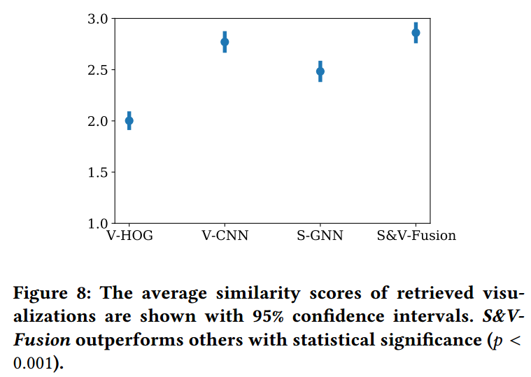
Case Study
Case 是由用户找出来的
可视化类型V-CNN 将相同趋势的散点图和折线图弄混了 V-CNN 对于一个 plain bar chart 的查询返回了很多 stacked bar charts
可视元素的个数查询的折线图有 3 条线，S-GNN 的结果大都有 3 条先，而 V-CNN 检测的结果大都只有一条线
数据的趋势S-GNN 检索出的结果与查询的可视化的数据趋势不一致，这种检测数据趋势的能力不如 V-CNN 而 S&V-Fusion 可以检索出相似数据趋势的可视化，并且保持可视化类型以及可视元素的个数。
Discussion
Lessons
结构信息的必要性。 可视化与图像的区别（可视元素与像素）类比思考：(可视化)编程语言与自然语言的区别？结构信息可以理解为是粗粒度的信息，而像素层面的信息则更加细粒度
深度学习模型的定制。
- 数据增广。翻转不适用于可视化
- 可视化中更关注形状而不是纹理（传统 CNN 模型关注的部分），因此需要对 CNN 进行调整以适应可视化
Generalizability and Application Scenarios
其他库生成的可视化。
- 本文使用的是从 Plotly 上爬取的可视化，但本文的方法也可以扩展
- 使用本文的方法的要求
- a unified structure of visualizations
- 例如，grouping
s by data columns in Plotly
- 例如，grouping
- the consistent usage of SVG elements in the visualizations
- all the bars in bar charts are plotted with
s.
- all the bars in bar charts are plotted with
- a unified structure of visualizations
使用规范（例如 Vega-Lite 和 Plotly）生成的可视化通常满足上述要求但对于使用 AI 或 D3 生成的可视化，通常其更加灵活，不一定满足 consistent usage。例如在 D3 中，不同可视化中的 bars 可以通过
多视图可视化。 本文的方法可以通过考虑更多的因素，例如视图间的层次或空间关系，来捕捉多视图间的结构信息。
应用场景。Vis as a data format. 提出可视化特定的方法来存储、查询和分析大量的可视化。
- 本文的方法提供了一个新的思路来实现最近邻查询
- 促进可视化代码重用
- 允许把相似的可视化归类，进而分析用户对于可视设计上的偏好。
- 帮助大规模可视化数据集的构建，更容易标注一些细粒度的标签（例如数据趋势）
Limitations
评估。
- 缺乏定量的指标来衡量数据趋势
- 本文的方法相似性分数为 2.8607，还不算很好
- 折线图和散点图之间的混淆可以进一步的减少
- 现在混淆的原因可能是由于折线图中数据点上有一个 circle，影响了相似性计算
特征融合。本文的方法是直接将结构信息和视觉信息两个向量连接在一起，这一步会带来一些限制：
- 占用额外的空间（废话）
- 存在一些冗余的信息，例如颜色，导致计算相似度的时候存在 bias
- 为了解决这个缺点，可能可以基于其他信息，例如交互记录（Screen2Vec 中有提到）来融合视觉和结构信息。但由于缺少可视化的数据集，作者将其作为未来工作。
Conclusion
背景+问题基于可扩展矢量图（SVG）的可视化图像已被广泛使用并在网上分享。伴随着它们的流行，检索类似的基于 SVG 的可视化图像已成为一项关键任务。
本文工作在本文中，我们提出了一种结构感知的可视化检索方法，该方法基于我们在试点研究中调查的最常见的可视化感知相似性标准。
亮点除了先前研究中广泛使用的视觉信息外，我们的方法还进一步考虑了经常被忽视但至关重要的结构信息，以提高性能。
具体方法
- 为了考虑这两种类型的信息，我们将 SVG 转换为位图和网络，以用于提取视觉信息和结构信息。
- 采用对比表征学习技术，分别生成视觉和结构信息的低维嵌入向量。
- 相应的可视化由嵌入向量的连接表示，用于可视化检索。
评估我们进行了广泛的评估，包括与以前的方法进行定量比较，进行用户研究和多个案例研究，以证明我们的方法的有效性。
未来工作在未来，我们希望将我们的结构感知可视化检索方法扩展到更多的可视化类型，例如，多视图可视化。另一个有趣的方向是探索从基于位图的可视化中直接提取结构信息的可能性，并研究我们的方法如何在基于位图的可视化检索中发挥作用。
Thinking
- vis as a data format
- 写作：what-why-how, overview + detail
- 借鉴 Image Retrieval 中的自监督学习的方法
- 与 ChartSeer 的区别
- latex 检索
- 跨域可视化检索(text, design, code, visualization 之间的互相检索)
- 稀有类别的分类推荐等
- 投 CHI 的文章：idea 新颖，评估完善
✉️ zjuvis@cad.zju.edu.cn